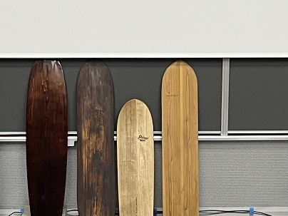

トークイベント
感想

実際とはかけ離れているが、自身の原点とサーフボードの原点を掛け合わせていたり
地産地消概念をここまで自身のやりたいことに落とし込めていることにとても感心した。
自身の原点に一度立ち返り、サーフボードの原点であるアライアを紐づけて、更には自身で日本の木を使って作っている。
選手としての生活もあるであろうに、自身で制作するその行動力が何よりもすごいと思った。
漆の色や光沢感を見て、バイク屋ヘルメットの塗装に利用してみたいと思ったので、今度挑戦してみる。
アライアとは
アライアは昔のハワイにおいて庶民層が使うサーフボードとして扱われてたもので、
フィンなどは付いておらずあくまでシンプルなただの木の板である。
古代のポリネシア人たちは沖までの移動手段として日常的にこうした木の板(アライア)に乗って波の上を滑っていたようだ。
木製で重く、フィンなどもついていないため非常にコントロールが難しい。